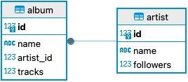
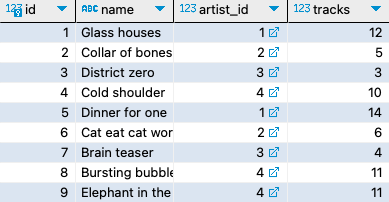
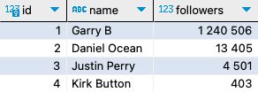
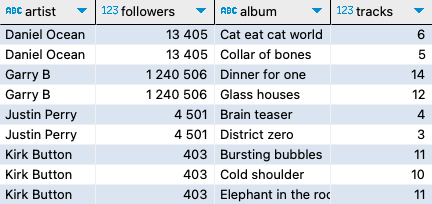
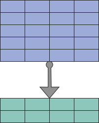
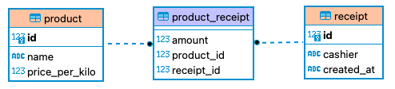
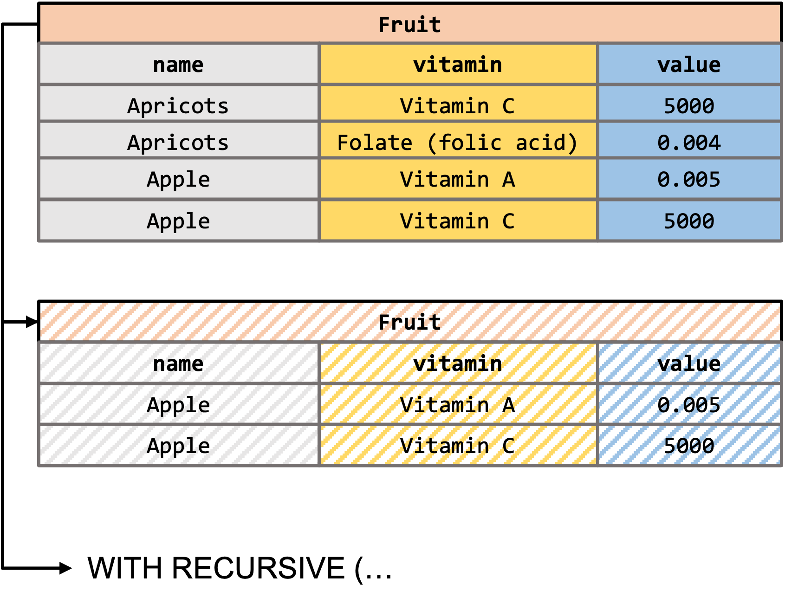

Tehtävien 1 & 2 viimeinen palautuspäivä 03.03.2023 kello 23:59 (sunnuntai).
Tehtäviin huomioitavat piirteet:
Tx.sql” tiedosto.
T1.sql”, tehtävä 2 => “T2.sql”….mode table”, “.headers ON” tai “.echo ON”.Versio: 1.2.3



Luo taulukot artistit “artist” ja albumit “album” tietokantaan, esim. “music.db”. Albumin on pakko kuulua jollekkin artistille. Artistilla voi olla monta albumia.
“artist”-taulukossa sarakkeet:
id - identiteetti. Taulun pääavain, jossa kokonaisluku + AUTOINCREMENT.name - nimi, jossa pakollinen merkkijono.followers - seuraajat, jossa pakollinen kokonaisluku.“album”-taulukossa sarakkeet:
id - identiteetti. Taulun pääavain, jossa kokonaisluku + AUTOINCREMENT.name - nimi, jossa pakollinen merkkijono.artist_id - artisti, josta pakollinen viittaus artistit taulun identiteetti kenttään.tracks - raidat, jossa pakollinen kokonaisluku. Luku kertoo vain, että montako biisiä levyllä on.Muista toteuttaa relaatio tietokanta taulujen välille.
Syötä taulukkoihin t1_album.csv ja t1_artist.csv tiedot.

Tietokannassa on valmiina edellisen tehtävän tietokantataulut tietueineen. Hae tietokannasta liitoskyselyn avulla artistit ja albumit. Kvalifioi tulosjoukkoon artistin nimi, seuraajat, sekä albumin nimi ja raitojen määrä. Järjestele tulokset vielä niin, että artistien nimet ovat ensin aakkosjärjestyksessä ja näiden sisällä albumit aakkosjärjestyksessä.
Huom! voit ketjuttaa järjestyksiä saman “ORDER BY”-määreen sisällä erottelemalla lajiteltavat sarakkeet järjestyksineen. Esim.
ORDER BY sarake_1 ASC, sarake_2 ASC;
Sarakkeet tulee kelpuuttaa (kvalifioida) ja nimetä tulosjoukkoon seuraavassa järjestyksessä:
artist - artistin nimi “artist” taulusta.followers - artistin seuraajat “artist” taulusta.album - albumin nimi “album” taulusta.tracks - raitojen määrä. “album” taulusta.Esimerkki tulosjoukko:
+--------------+-----------+----------------------+--------+
| artist | followers | album | tracks |
+--------------+-----------+----------------------+--------+
| Daniel Ocean | 13405 | Cat eat cat world | 6 |
| Daniel Ocean | 13405 | Collar of bones | 5 |
| Garry B | 1240506 | Dinner for one | 14 |
| Garry B | 1240506 | Glass houses | 12 |
| Justin Perry | 4501 | Brain teaser | 4 |
| Justin Perry | 4501 | District zero | 3 |
| Kirk Button | 403 | Bursting bubbles | 11 |
| Kirk Button | 403 | Cold shoulder | 10 |
| Kirk Button | 403 | Elephant in the room | 11 |
+--------------+-----------+----------------------+--------+
Huom! SQLite:stä löytyy sisäänrakennettuja koostefunktioita. Näitä tullaan käsittelemään tarkemmin kurssin myöhemmissä materiaaleissa. Katso alleviivattu linkki, mikäli tahdot päästä liikkeelle aiemmin.
Hae tietokannasta artistit ja heidän albumien raidat lukumäärinä. Ryhmittele tietueet niin, että tulosjoukossa näkyy vain kerran artistin nimi ja järjestele tulokset aakkosissa laskevasti (Z -> A) artistien nimien perusteella.
Sarakkeet tulee kelpuuttaa tulosjoukkoon seuraavasti:
name - artistin nimi “artist” taulusta.total_tracks - raitojen määrä “SUM(album.tracks)”.Esimerkki tulosjoukko:
+--------------+--------------+
| name | total_tracks |
+--------------+--------------+
| Daniel Ocean | 11 |
| Garry B | 26 |
| Justin Perry | 7 |
| Kirk Button | 32 |
+--------------+--------------+
Kaupan hyllystä löytyy tuotteita eli “product”-taulu. Tuotteet ovat kaikki irto tavaraa. Aseta numeerinen tuotekohtainen sarake tieto per kilo hinnalle. Tuotteilla on oltava myös uniikki nimi name. Nimen on oltava merkkijono, eli TEXT sukuinen ja uniikin sarake rajoitteen column constraint asetus tapahtuu avainsanalla UNIQUE. Uniikki rajoite löytyy myös “column-constraint” termillä tietokanta taulukon luonti dokumentaatiosta “column-def” alta.
Tuotteet (product) taulukon sarakkeet:
id - identiteetti. Taulun pääavain, jossa kokonaisluku + AUTOINCREMENT.name - tuotteen nimi, jossa pakollinen uniikki merkkijono.price_per_kilo - per kilo hinta, jossa pakollinen NUMERIC.Myydyistä karkeista tulee kyetä muodostaa kuitteja eli “receipt”-taulu. Kuitin tiedoissa on oltava palvelleen myyjän nimi. Tapahtuma hetkellä tietokannan tulee omatoimisesti kyetä lisäämään SQLite3 aikaleima. SQLite3:sta löytyy DATETIME-tietotyyppi määrittely. Tapahtuma merkitään sarakkeeseen created_at, jonka oletusmääre on “CURRENT_TIMESTAMP”. Tässä tehtävässä aikaleima arvot asetetaan dataset (t4_receipts.csv) tiedostosta, mutta oletusarvo määrittely on tästä huolimatta oltava olemassa. SQLite3 aikaleima vastaa Unix-aikaleimaa.
Lisää tietueet taulukkoon tiedostosta “t4_product.csv” tai suorilla SQL-lausekkeilla. Testiympäristössä on valmiina tarvittavat “.csv” tiedostot.
Kuitti (receipt) taulukon sarakkeet:
id - identiteetti. Taulun pääavain, jossa kokonaisluku + AUTOINCREMENT.cashier - myyjän nimi, jossa pakollinen merkkijono.created_at - kuitin luontipäivämäärä, jossa pakollinen aikaleima DATETIME.Kuitissa voi olla monia tuotteita ja sama tuote voi esiintyä useassa kuitissa. Liitostaulu nimetään “product_receipt”. Yhdistele tuotteet ja kuitit receipt_id liitostaulun avulla. Aseta relaatioiden lisäksi liitostauluun amount sarake, johon voidaan taltioida NUMERIC arvoja. Esimerkiksi kuitilla voi esiintyä tuotetta X määrällä “0.4”. Kuitilla saa myös esiintyä sama tuote useasti, eli tätä ei tarvitse rajoittaa.
Lisää tietueet taulukkoon tiedostosta “t4_receipt.csv” tai suorilla SQL-lausekkeilla.
Liitostaulu (product_receipt) taulukon sarakkeet:
amount - tuotteen määrä, jossa pakollinen NUMERIC.product_id - josta pakollinen viittaus “product” taulun “id”-kenttään.receipt_id - josta pakollinen viittaus “receipt” taulun “id”-kenttään.Huom! viittaukseen kuuluu kaksi määritelmää, tietotyyppi+rajoitteet & viittaus erikseen.
Viittaus tapahtuu vierasavaimen, eli “FOREIGN KEY” avulla.
Lisää tietueet taulukkoon tiedostosta “t4_product_receipt.csv” tai suorilla SQL-lausekkeilla.
Tehtävä pohjautuu edelliseen. Tehtävätarkistimessa tietokanta on jo kuitenkin valmiina. Kehittele tätä tehtäväpalautusta varten yksi SQL-lauseke, jolla voidaan hakea samaisesta tietokannasta kaikkien kuittien tiedot, joissa “Vincent” on ollut myyjänä. Kysely tulee toteuttaa ainoastaan yhdellä SQL-lausekkeella.
Kvalifioi ja aseta aliaksia alla olevan tulosjoukon mukaisesti. Järjestele lopuksi tulosjoukko kuittien päivämäärän mukaan uusimmasta vanhimpaan. Kyselyssä ei tarvitse ottaa huomioon samalla kuitilla esiintyvien tuotteiden järjestystä.
cashier - Myyjän nimi kenttä “receipt”-taulukostareceipt_date - Kuitin luontipäivämäärä “created_at”-kenttä “receipt”-taulukostaproduct_name - Tuotteen nimi “name”-kenttä “product”-taulukostaprice_per_kilo - Tuotteen kilohinta “product”-taulukostaamount - Tuotteen määrä “product_receipt”-taulukostaEsimerkki tulosjoukko:
+---------+--------------+--------------+----------------+--------+
| cashier | receipt_date | product_name | price_per_kilo | amount |
+---------+--------------+--------------+----------------+--------+
| Vincent | 1674691200 | Rifrafs | 7 | 1.1 |
| Vincent | 1674604800 | Salmarish | 10 | 0.5 |
| Vincent | 1674518400 | Rumbles | 9.5 | 1.6 |
| Vincent | 1674432000 | Chunkies | 8 | 1.3 |
| Vincent | 1674345600 | Yumyums | 6 | 1 |
| Vincent | 1674259200 | Rifrafs | 7 | 0.6 |
| Vincent | 1674172800 | Salmarish | 10 | 1 |
| Vincent | 1674086400 | Rumbles | 9.5 | 0.9 |
| Vincent | 1674000000 | Chunkies | 8 | 1.5 |
| Vincent | 1673913600 | Yumyums | 6 | 0.8 |
+---------+--------------+--------------+----------------+--------+Tässä tehtävässä toteutetaan kysely Chinook-tietokannasta pelkistettyyn “Employee”-tauluun. Kyselyn tarkoituksena on selvittää, ketkä työntekijöistä ovat työntekijän “Nancy Edwards” alaisuudessa (ReportsTo).
Tehtävän pelkistetty tietokantamalli tietueineen löytyy “t6_employee.sql”-tiedostosta. Kvalifioi tulosjoukkoon ainoastaan “FirstName” ja “LastName”. Järjestele nimet aakkosjärjestykseen järjestyksessä etunimi, sukunimi.
Esimerkki tulosjoukosta:
+-----------+----------+
| FirstName | LastName |
+-----------+----------+
| Jane | Peacock |
| Margaret | Park |
| Steve | Johnson |
+-----------+----------+Huom! Palautettavassa tiedostossa ei saa esiintyä numeroa “2”.

Tehtävä perustuu “t7_fruits.sql”-tiedostoon, joka on jo valmiina automaattitarkistimessa.
Toteuta yksi kysely, jolla esität vain niiden hedelmien tiedot, joissa ei esiinny “Folate (folic acid)” vitamiinia. Vinkkinä: “Lime”:ssä ei ole “Folate (folic acid)”
tietoa, joten se kuuluu esitettävien listalle ja “Banana”:ssa sitä esiintyy, joten se ei saa näkyä tulosjoukossa.
Yksi SQL-lauseke tarkoittaa, että tiedostossa saa esiintyä vain yksi puolipiste “;”. Loogisesti kyselyn tulee toimia niin, että jos taulukon tietueita muokattaisiin, niin kysely toimisi edelleen tehtäväannon mukaisesti.
Kvalifioi tulosjoukkoon “name”, “vitamin” ja “value”. Järjestele tulosjoukko lopuksi nimen perusteella aakkosissa laskevaan järjestykseen, sekä samojen
tulosten sisällä vitamiinien perusteella aakkosissa nousevaan järjestykseen.
Esimerkki tulosjoukosta:
+--------+------------+-------+
| name | vitamin | value |
+--------+------------+-------+
| Lychee | Vitamin A | 0.002 |
| Lychee | Vitamin B1 | 0.09 |
| Lychee | Vitamin B2 | 0.04 |
| Lychee | Vitamin B6 | 0.04 |
| Lychee | Vitamin C | 23000 |
| Lime | Vitamin A | 0.03 |
| Lime | Vitamin B1 | 0.43 |
| Lime | Vitamin B2 | 0.02 |
| Lime | Vitamin B6 | 29.1 |
+--------+------------+-------+Tämän tehtävän voi ratkaista monella tapaa. Alkuun kannattaa tutkia datasetti läpi. Tietorakenne on tehtävässä erikoinen. Seuraavaksi voidaan pohtia logiikka, miten saisimme tietää, mitkä hedelmistä pitävät sisällään “Folate (folic acid)”. Tiedon perusteella voidaan muodostaa esim. väliaikataulu